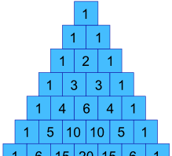
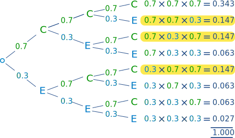

The Binomial Distribution
|
"Bi" means "two" (like a bicycle has two wheels) ... |
|

Tossing a Coin:
- Did we get Heads (H) or
- Tails (T)
We say the probability of the coin landing H is ½
And the probability of the coin landing T is ½

Throwing a Die:
- Did we get a four ... ?
- ... or not?
We say the probability of a four is 1/6 (one of the six faces is a four)
And the probability of not four is 5/6 (five of the six faces are not a four)
Note that a die has 6 sides but here we look at only two cases: "four: yes" or "four: no"
Let's Toss a Coin!
Toss a fair coin three times ... what is the chance of getting exactly two Heads?
Using H for heads and T for Tails we may get any of these 8 outcomes:
| HHH |  |
|
| HHT | |
|
| HTH | |
|
| HTT | |
|
| THH | |
|
| THT | |
|
| TTH | |
|
| TTT |
Which outcomes do we want?
"Two Heads" could be in any order: "HHT", "THH" and "HTH" all have two Heads (and one Tail).
So 3 of the outcomes produce "Two Heads".
What is the probability of each outcome?
Each outcome is equally likely, and there are 8 of them, so each outcome has a probability of 1/8
So the probability of event "Two Heads" is:
| Number of outcomes we want |
Probability of each outcome |
||
| 3 | × | 1/8 | = 3/8 |
So the chance of getting Two Heads is 3/8
We used special words:
- Outcome: any result of three coin tosses (8 different possibilities)
- Event: "Two Heads" out of three coin tosses (3 outcomes have this)
3 Heads, 2 Heads, 1 Head, None
The calculations are (P means "Probability of"):
- P(Three Heads) = P(HHH) = 1/8
- P(Two Heads) = P(HHT) + P(HTH) + P(THH) = 1/8 + 1/8 + 1/8 = 3/8
- P(One Head) = P(HTT) + P(THT) + P(TTH) = 1/8 + 1/8 + 1/8 = 3/8
- P(Zero Heads) = P(TTT) = 1/8
We can write this in terms of a Random Variable "X" = "The number of Heads from 3 tosses of a coin":
- P(X = 3) = 1/8
- P(X = 2) = 3/8
- P(X = 1) = 3/8
- P(X = 0) = 1/8
And this is what it looks like as a graph:

It is symmetrical!
Making a Formula
Now imagine we want the chances of 5 heads in 9 tosses: to list all 512 outcomes will take a long time!
So let's make a formula.
In our previous example, how can we get the values 1, 3, 3 and 1 ?

Well, they are actually in Pascal’s Triangle !
Can we make them using a formula?
Sure we can, and here it is:

The formula may look scary but is easy to use. We only need two numbers:
- n = total number
- k = number we want
The "!" means "factorial", for example 4! = 1×2×3×4 = 24
Note: it is often called "n choose k" and you can learn more here.
Let's try it:
Example: with 3 tosses, what are the chances of 2 Heads?
We have n=3 and k=2:
So there are 3 outcomes that have "2 Heads"
(We knew that already, but we now have a formula for it.)
Let's use it for a harder question:
Example: with 9 tosses, what are the chances of 5 Heads?
We have n=9 and k=5:
So 126 of the outcomes will have 5 heads
And for 9 tosses there are a total of 29 = 512 outcomes, so we get the probability:
| Number of outcomes we want |
Probability of each outcome |
|||
| 126 | × | 1512 | = | 126512 |
So:
P(X=5) = 126512 = 0.24609375
About a 25% chance.
(Easier than listing them all.)
Bias!
So far the chances of success or failure have been equally likely.
But what if the coins are biased (land more on one side than another) or choices are not 50/50.
Example: You sell sandwiches. 70% of people choose chicken, the rest choose something else.
What is the probability of selling 2 chicken sandwiches to the next 3 customers?
This is just like the heads and tails example, but with 70/30 instead of 50/50.
Let's draw a tree diagram:

The "Two Chicken" cases are highlighted.
The probabilities for "two chickens" all work out to be 0.147, because we are multiplying two 0.7s and one 0.3 in each case. In other words
0.147 = 0.7 × 0.7 × 0.3
Or, using exponents:
= 0.72 × 0.31
The 0.7 is the probability of each choice we want, call it p
The 2 is the number of choices we want, call it k
And we have (so far):
= pk × 0.31
The 0.3 is the probability of the opposite choice, so it is: 1−p
The 1 is the number of opposite choices, so it is: n−k
Which gives us:
= pk(1-p)(n-k)
Where
- p is the probability of each choice we want
- k is the the number of choices we want
- n is the total number of choices
Example: (continued)
- p = 0.7 (chance of chicken)
- k = 2 (chicken choices)
- n = 3 (total choices)
So we get:
which is what we got before, but now using a formula
Now we know the probability of each outcome is 0.147
But we need to include that there are three such ways it can happen: (chicken, chicken, other) or (chicken, other, chicken) or (other, chicken, chicken)
Example: (continued)
The total number of "two chicken" outcomes is:
And we get:
| Number of outcomes we want |
Probability of each outcome |
|||
| 3 | × | 0.147 | = | 0.441 |
So the probability of event "2 people out of 3 choose chicken" = 0.441
OK. That was a lot of work for something we knew already, but now we have a formula we can use for harder questions.
Example: Sam says "70% choose chicken, so 7 of the next 10 customers should choose chicken" ... what are the chances Sam is right?
So we have:
- p = 0.7
- n = 10
- k = 7
And we get:
That is the probability of each outcome.
And the total number of those outcomes is:
And we get:
| Number of outcomes we want |
Probability of each outcome |
|||
| 120 | × | 0.0022235661 | = | 0.266827932 |
So the probability of 7 out of 10 choosing chicken is only about 27%
Moral of the story: even though the long-run average is 70%, don't expect 7 out of the next 10.
Putting it Together
Now we know how to calculate how many:
n!k!(n-k)!
And the probability of each:
pk(1-p)(n-k)
When multiplied together we get:
Probability of k out of n ways:
P(k out of n) = n!k!(n-k)! pk(1-p)(n-k)
The General Binomial Probability Formula
Important Notes:
- The trials are independent,
- There are only two possible outcomes at each trial,
- The probability of "success" at each trial is constant.
Quincunx

Have a play with the Quincunx (then read Quincunx Explained) to see the Binomial Distribution in action.
Throw the Die
A fair die is thrown four times. Calculate the probabilities of getting:
- 0 Twos
- 1 Two
- 2 Twos
- 3 Twos
- 4 Twos
In this case n=4, p = P(Two) = 1/6
X is the Random Variable ‘Number of Twos from four throws’.
Substitute x = 0 to 4 into the formula:
P(k out of n) = n!k!(n-k)! pk(1-p)(n-k)
Like this (to 4 decimal places):
- P(X = 0) = 4!0!4! × (1/6)0(5/6)4 = 1 × 1 × (5/6)4 = 0.4823
- P(X = 1) = 4!1!3! × (1/6)1(5/6)3 = 4 × (1/6) × (5/6)3 = 0.3858
- P(X = 2) = 4!2!2! × (1/6)2(5/6)2 = 6 × (1/6)2 × (5/6)2 = 0.1157
- P(X = 3) = 4!3!1! × (1/6)3(5/6)1 = 4 × (1/6)3 × (5/6) = 0.0154
- P(X = 4) = 4!4!0! × (1/6)4(5/6)0 = 1 × (1/6)4 × 1 = 0.0008
Summary: "for the 4 throws, there is a 48% chance of no twos, 39% chance of 1 two, 12% chance of 2 twos, 1.5% chance of 3 twos, and a tiny 0.08% chance of all throws being a two (but it still could happen!)"
This time the graph is not symmetrical:

It is not symmetrical!
It is skewed because p is not 0.5

Sports Bikes
Your company makes sports bikes. 90% pass final inspection (and 10% fail and need to be fixed).
What is the expected Mean and Variance of the 4 next inspections?
First, let's calculate all probabilities.
- n = 4,
- p = P(Pass) = 0.9
X is the Random Variable "Number of passes from four inspections".
Substitute x = 0 to 4 into the formula:
P(k out of n) = n!k!(n-k)! pk(1-p)(n-k)
Like this:
- P(X = 0) = 4!0!4! × 0.900.14 = 1 × 1 × 0.0001 = 0.0001
- P(X = 1) = 4!1!3! × 0.910.13 = 4 × 0.9 × 0.001 = 0.0036
- P(X = 2) = 4!2!2! × 0.920.12 = 6 × 0.81 × 0.01 = 0.0486
- P(X = 3) = 4!3!1! × 0.930.11 = 4 × 0.729 × 0.1 = 0.2916
- P(X = 4) = 4!4!0! × 0.940.10 = 1 × 0.6561 × 1 = 0.6561
Summary: "for the 4 next bikes, there is a tiny 0.01% chance of no passes, 0.36% chance of 1 pass, 5% chance of 2 passes, 29% chance of 3 passes, and a whopping 66% chance they all pass the inspection."
Mean, Variance and Standard Deviation
Let's calculate the Mean, Variance and Standard Deviation for the Sports Bike inspections.
There are (relatively) simple formulas for them. They are a little hard to prove, but they do work!
The mean, or "expected value", is:
μ = np
For the sports bikes:
μ = 4 × 0.9 = 3.6
So we can expect 3.6 bikes (out of 4) to pass the inspection.
Makes sense really ... 0.9 chance for each bike times 4 bikes equals 3.6
The formula for Variance is:
Variance: σ2 = np(1-p)
And Standard Deviation is the square root of variance:
σ = √(np(1-p))
For the sports bikes:
Variance: σ2 = 4 × 0.9 × 0.1 = 0.36
Standard Deviation is:
σ = √(0.36) = 0.6
Note: we could also calculate them manually, by making a table like this:
| X | P(X) | X × P(X) | X2 × P(X) |
| 0 | 0.0001 | 0 | 0 |
| 1 | 0.0036 | 0.0036 | 0.0036 |
| 2 | 0.0486 | 0.0972 | 0.1944 |
| 3 | 0.2916 | 0.8748 | 2.6244 |
| 4 | 0.6561 | 2.6244 | 10.4976 |
| SUM: | 3.6 | 13.32 |
The mean is the Sum of (X × P(X)):
μ = 3.6
The variance is the Sum of (X2 × P(X)) minus Mean2:
Variance: σ2 = 13.32 − 3.62 = 0.36
Standard Deviation is:σ = √(0.36) = 0.6
And we got the same results as before (yay!)
Summary
- The General Binomial Probability Formula:
P(k out of n) = n!k!(n-k)! pk(1-p)(n-k)
- Mean value of X: μ = np
- Variance of X: σ2 = np(1-p)
- Standard Deviation of X: σ = √(np(1-p))